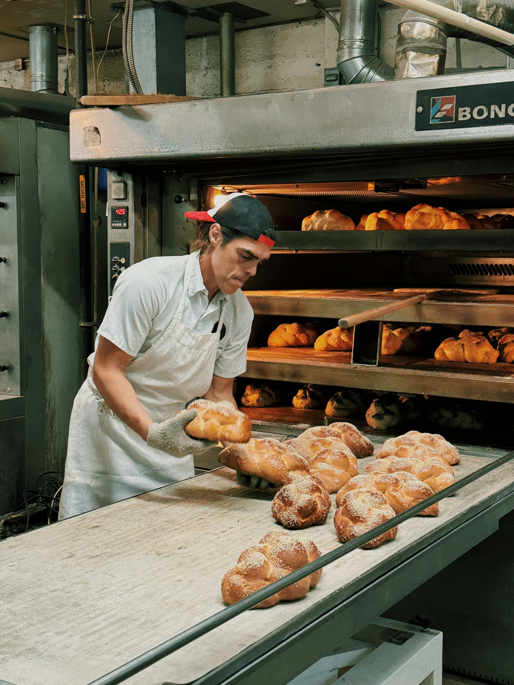

About Brown's Bakery

Brown's Bakery is a modern bakery and café based in Centurion, Gauteng. The bakery was established in 2005 by Mpho Brown.
Our Mission
Our mission is to provide the community with high-quality, freshly baked products and carefully prepared beverages while creating a welcoming space where people can connect, work, relax and enjoy memorable experiences.
Our Vision
Our vision is to become Centurion's preferred bakery and café, recognised for exceptional quality, innovation and a welcoming environment.